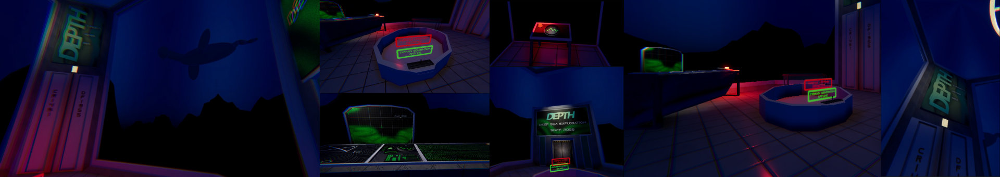

Solar Bloom (2025)
An Isometric, Cosy Puzzle Game set in a harmonious Solarpunk neighbourhood.. or so it seems. The further the player progresses using their supernatural power to harness the artificial sun, the deeper their understanding of the city that hides it's true nature from those who inhabit it.
Pitched at Game Republic's 'Trends and Opportunities for 2025' Event in January, Solar Bloom was conceptualsied, prototyped and pitched by an indie team of five. Using collaborative tools such as Miro, Trello, Discord and the Google Suite while using Unreal Engine to build core mechanics, Solar Bloom was
Skills Used
- Environment Design & Level Design
- Producing and Leading a Multi-Disciplinary Team
- Pitching for Industry Engagement and Feedback
- Worldbuilding and Narrative Writing for Proof of Concept
- Project Managment using the Google Suite, Miro, Trello